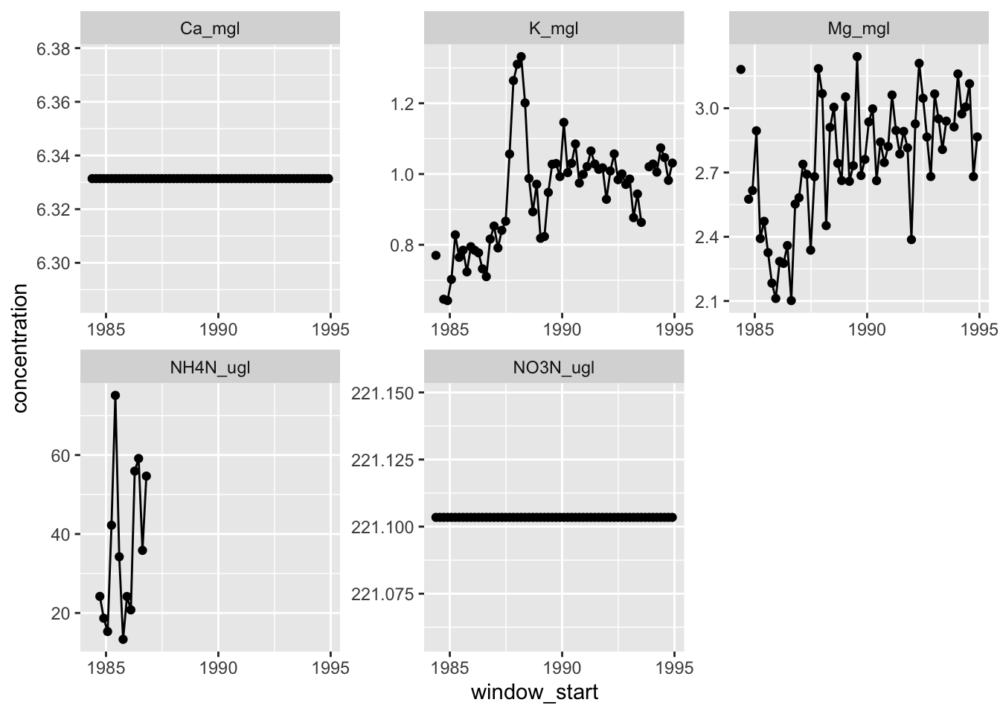

library(tidyverse)
bq1 <- read_csv("data/QuebradaCuenca1-Bisley.csv")
bq2 <- read_csv("data/QuebradaCuenca2-Bisley.csv")
bq3 <- read_csv("data/QuebradaCuenca3-Bisley.csv")
prm <- read_csv("data/RioMameyesPuenteRoto.csv")Analytical Workflow Final
Reproducing Figure 3. from Schaefer’s on Hurrican Hugo in Puerto Rico
Read data
Cleaning Data
combined <- bind_rows(bq1, bq2, bq3, prm) # bind_rows vs rbind
clean_combine <- combined |> # clean the combine data
select(Sample_ID, Sample_Date,`NH4-N`, `NO3-N`, Ca, Mg, K) # select the columns of interest
glimpse(clean_combine) # glimpse at the clean dataRows: 7,177
Columns: 7
$ Sample_ID <chr> "Q1", "Q1", "Q1", "Q1", "Q1", "Q1", "Q1", "Q1", "Q1", "Q1"…
$ Sample_Date <date> 1986-05-20, 1986-05-27, 1986-06-03, 1986-10-21, 1986-10-2…
$ `NH4-N` <dbl> NA, NA, NA, 10, 40, 10, 47, 20, NA, 16, 10, 10, 23, 20, 36…
$ `NO3-N` <dbl> 118, 109, 114, 124, NA, NA, 103, 153, 264, 158, 106, 146, …
$ Ca <dbl> 4.26, 3.17, 4.38, 4.91, 4.60, 4.45, 3.93, 3.95, 2.11, 3.95…
$ Mg <dbl> 3.04, 3.13, 3.15, 2.73, 2.86, 2.80, 2.40, 2.66, 1.19, 2.43…
$ K <dbl> 0.81, 0.82, 0.82, 0.65, 0.62, 0.64, 0.69, 0.68, 0.77, 0.66…Creating the tibble
combine_tibble <- tibble(
window_start = seq(
ymd("1984-05-20"),
ymd("1994-12-31"),
by = "9 weeks"
),
site = NA,
NH4N_ugl = NA,
NO3N_ugl = NA,
Ca_mgl = NA,
Mg_mgl = NA,
K_mgl = NA
)Calculating a moving average
w2 <- clean_combine$Sample_Date[1]
for (i in 1:nrow(combine_tibble)) {
w1 <- w2
print(w1)
w2 <- w1 + weeks(9)
print(w2)
print('')
k <- clean_combine$K[clean_combine$Sample_Date >= w1 & clean_combine$Sample_Date < w2]
mean_k <- mean(k, na.rm = TRUE)
combine_tibble$K_mgl[i] <- mean_k
mg <- clean_combine$Mg[clean_combine$Sample_Date >= w1 & clean_combine$Sample_Date < w2]
mean_mg <- mean(mg, na.rm = TRUE)
combine_tibble$Mg_mgl[i] <- mean_mg
nh4n <- clean_combine$`NH4-N`[clean_combine$Sample_Date >= w1 & clean_combine$Sample_Date < w2]
mean_nh4n <- mean(nh4n, na.rm = TRUE)
combine_tibble$NH4N_ugl[i] <- mean_nh4n
ca <- clean_combine$Ca[clean_combine$Sample_Date >= w1 & clean_combine$Sample_Date < w2]
mean_ca <- mean(ca, na.rm = TRUE)
combine_tibble$Ca_mgl <- mean_ca
no3n <- clean_combine$`NO3-N`[clean_combine$Sample_Date >= w1 & clean_combine$Sample_Date < w2]
mean_no3n <-mean(no3n, na.rm = TRUE)
combine_tibble$NO3N_ugl <- mean_no3n
}[1] "1986-05-20"
[1] "1986-07-22"
[1] ""
[1] "1986-07-22"
[1] "1986-09-23"
[1] ""
[1] "1986-09-23"
[1] "1986-11-25"
[1] ""
[1] "1986-11-25"
[1] "1987-01-27"
[1] ""
[1] "1987-01-27"
[1] "1987-03-31"
[1] ""
[1] "1987-03-31"
[1] "1987-06-02"
[1] ""
[1] "1987-06-02"
[1] "1987-08-04"
[1] ""
[1] "1987-08-04"
[1] "1987-10-06"
[1] ""
[1] "1987-10-06"
[1] "1987-12-08"
[1] ""
[1] "1987-12-08"
[1] "1988-02-09"
[1] ""
[1] "1988-02-09"
[1] "1988-04-12"
[1] ""
[1] "1988-04-12"
[1] "1988-06-14"
[1] ""
[1] "1988-06-14"
[1] "1988-08-16"
[1] ""
[1] "1988-08-16"
[1] "1988-10-18"
[1] ""
[1] "1988-10-18"
[1] "1988-12-20"
[1] ""
[1] "1988-12-20"
[1] "1989-02-21"
[1] ""
[1] "1989-02-21"
[1] "1989-04-25"
[1] ""
[1] "1989-04-25"
[1] "1989-06-27"
[1] ""
[1] "1989-06-27"
[1] "1989-08-29"
[1] ""
[1] "1989-08-29"
[1] "1989-10-31"
[1] ""
[1] "1989-10-31"
[1] "1990-01-02"
[1] ""
[1] "1990-01-02"
[1] "1990-03-06"
[1] ""
[1] "1990-03-06"
[1] "1990-05-08"
[1] ""
[1] "1990-05-08"
[1] "1990-07-10"
[1] ""
[1] "1990-07-10"
[1] "1990-09-11"
[1] ""
[1] "1990-09-11"
[1] "1990-11-13"
[1] ""
[1] "1990-11-13"
[1] "1991-01-15"
[1] ""
[1] "1991-01-15"
[1] "1991-03-19"
[1] ""
[1] "1991-03-19"
[1] "1991-05-21"
[1] ""
[1] "1991-05-21"
[1] "1991-07-23"
[1] ""
[1] "1991-07-23"
[1] "1991-09-24"
[1] ""
[1] "1991-09-24"
[1] "1991-11-26"
[1] ""
[1] "1991-11-26"
[1] "1992-01-28"
[1] ""
[1] "1992-01-28"
[1] "1992-03-31"
[1] ""
[1] "1992-03-31"
[1] "1992-06-02"
[1] ""
[1] "1992-06-02"
[1] "1992-08-04"
[1] ""
[1] "1992-08-04"
[1] "1992-10-06"
[1] ""
[1] "1992-10-06"
[1] "1992-12-08"
[1] ""
[1] "1992-12-08"
[1] "1993-02-09"
[1] ""
[1] "1993-02-09"
[1] "1993-04-13"
[1] ""
[1] "1993-04-13"
[1] "1993-06-15"
[1] ""
[1] "1993-06-15"
[1] "1993-08-17"
[1] ""
[1] "1993-08-17"
[1] "1993-10-19"
[1] ""
[1] "1993-10-19"
[1] "1993-12-21"
[1] ""
[1] "1993-12-21"
[1] "1994-02-22"
[1] ""
[1] "1994-02-22"
[1] "1994-04-26"
[1] ""
[1] "1994-04-26"
[1] "1994-06-28"
[1] ""
[1] "1994-06-28"
[1] "1994-08-30"
[1] ""
[1] "1994-08-30"
[1] "1994-11-01"
[1] ""
[1] "1994-11-01"
[1] "1995-01-03"
[1] ""
[1] "1995-01-03"
[1] "1995-03-07"
[1] ""
[1] "1995-03-07"
[1] "1995-05-09"
[1] ""
[1] "1995-05-09"
[1] "1995-07-11"
[1] ""
[1] "1995-07-11"
[1] "1995-09-12"
[1] ""
[1] "1995-09-12"
[1] "1995-11-14"
[1] ""
[1] "1995-11-14"
[1] "1996-01-16"
[1] ""
[1] "1996-01-16"
[1] "1996-03-19"
[1] ""
[1] "1996-03-19"
[1] "1996-05-21"
[1] ""
[1] "1996-05-21"
[1] "1996-07-23"
[1] ""
[1] "1996-07-23"
[1] "1996-09-24"
[1] ""
[1] "1996-09-24"
[1] "1996-11-26"
[1] ""
[1] "1996-11-26"
[1] "1997-01-28"
[1] ""print(combine_tibble)# A tibble: 62 × 7
window_start site NH4N_ugl NO3N_ugl Ca_mgl Mg_mgl K_mgl
<date> <lgl> <dbl> <dbl> <dbl> <dbl> <dbl>
1 1984-05-20 NA NaN 221. 6.33 3.18 0.77
2 1984-07-22 NA NaN 221. 6.33 NaN NaN
3 1984-09-23 NA 24.2 221. 6.33 2.58 0.646
4 1984-11-25 NA 18.7 221. 6.33 2.62 0.642
5 1985-01-27 NA 15.3 221. 6.33 2.89 0.702
6 1985-03-31 NA 42.2 221. 6.33 2.39 0.828
7 1985-06-02 NA 75.1 221. 6.33 2.47 0.764
8 1985-08-04 NA 34.2 221. 6.33 2.33 0.785
9 1985-10-06 NA 13.3 221. 6.33 2.18 0.723
10 1985-12-08 NA 24.2 221. 6.33 2.11 0.795
# ℹ 52 more rowsPivot long
clean_combine_long <- combine_tibble |> # new data from combine_tibble
pivot_longer( # collapse columns in order to plot by ions & their concentration levels
cols = !window_start & !site, # columns are not window start
names_to = "ion", # names are ions
values_to = "concentration" # these are the values
)
print(clean_combine_long)# A tibble: 310 × 4
window_start site ion concentration
<date> <lgl> <chr> <dbl>
1 1984-05-20 NA NH4N_ugl NaN
2 1984-05-20 NA NO3N_ugl 221.
3 1984-05-20 NA Ca_mgl 6.33
4 1984-05-20 NA Mg_mgl 3.18
5 1984-05-20 NA K_mgl 0.77
6 1984-07-22 NA NH4N_ugl NaN
7 1984-07-22 NA NO3N_ugl 221.
8 1984-07-22 NA Ca_mgl 6.33
9 1984-07-22 NA Mg_mgl NaN
10 1984-07-22 NA K_mgl NaN
# ℹ 300 more rowsPlot it!
# Need sites lines
# need to scale for the proper units
# need to scale for the proper years
ggplot(
data = clean_combine_long,
mapping = aes(
x = window_start,
y = concentration
)
) +
geom_line() +
geom_point() +
facet_wrap(~ion, scales = "free")